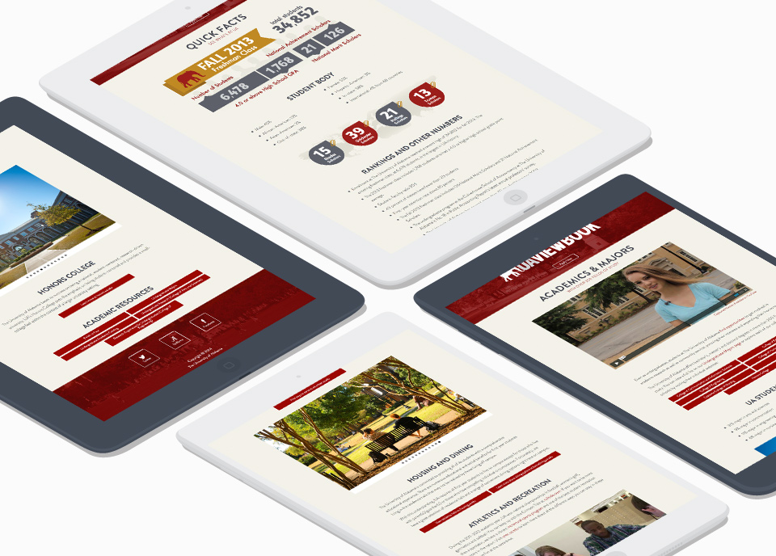

Dossier: Web Design
The University of Alabama Office of Undergraduate Admissions - May 2014
The University of Alabama’s Admissions’ Viewbook is an interactive portal and welcome site for accepted and potential incoming undergraduate students. The Viewbook provides access to essential university information and materials, as well as welcome videos and social media connections. The objectives were to provide the information in a simple, easy to navigate webpage, join students and parents with UA’s social media networks, and to provide answers to commonly asked questions. The Viewbook has over 5,000 views per month making it one of the most important sites hosted by UA.
Building the Viewbook
The site redesign needed to accommodate its growing access from mobile platforms; therefore, a fully responsive design that included graphics, videos and image rotators was required. I started by researching and benchmarking the admission websites of other universities that were relative in size to Alabama. I investigated the existing technologies and common web practices. For the design, I decided to create the site in a flat design that focused on a content first approach.
The next step was to construct the project plan and timeline for the site’s development. In this phase, I began creating the site’s basic identity. While the site falls within the overall branding of The University of Alabama identity, I was able to have a little more latitude. Due to UA’s color scheme being crimson and white, I knew using crimson was imperative but I wanted to use it in a modern, creative way. Therefore, I chose to saturate a stunning image of UA’s famous and recognizable Denny Chimes – a campanile (bell) tower. Rather than using white for the background, I decided on a light beige that is warmer and more inviting. Next, I carefully selected a web font that would maximize easy reading on all platforms. After assembling all of the page content from my team members, I selected the feature images.
Next was wire framing and mocking up the site. Wireframes provide low-cost and highly effective support for interactive design. The wireframe phase of this web project provided a conceptual screen design; and through testing, evolved into a solid interface and task flow. When the designs were settled upon, I created basic mockups and assets. I then constructed the infographics on the “Quick Facts” page as SVG's and created backup .jpg's to ensure performance on older browsers. Because SVG's are vector-based and crisp at any resolution, I chose to use them to help future-proof the site’s functionality with Retina and 5K displays.
In the third phase, I developed a working prototype of the Viewbook. I began by creating the responsive framework for the navigation and content of the pages. I incorporated a flexsider plug-in on the pages that called for a rotating image gallery. I also used the FitVid Javascript plug-in to allow all videos to be fully responsive. I coded all of the HTML and CSS to ensure it's accuracy.
In the last phase, the site went through extensive testing to ensure it performed on all platforms without any issues. When analyzing its performance, I focused on load time, search engine optimization, and the validity of the code. Currently, the Viewbook works in any browser and platform dating back to Internet Explorer 6, usign a small amount of progressive enhancement - something I am very proud of.
Outcomes & Effectiveness
The site has had great reception, garnering praise from the head of the Web Departments on campus, and even the president of the University. With my redesign and reorganization of the site, traffic has increased and fewwer questions have been submitted to the Admissions Office. Most importantly, the site has increased the number of digital applications submitted for admittance to the University.